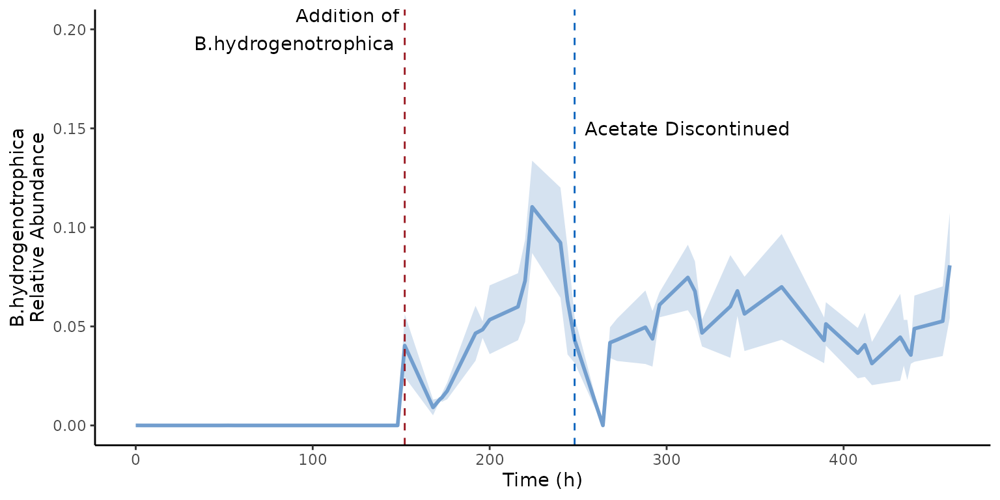
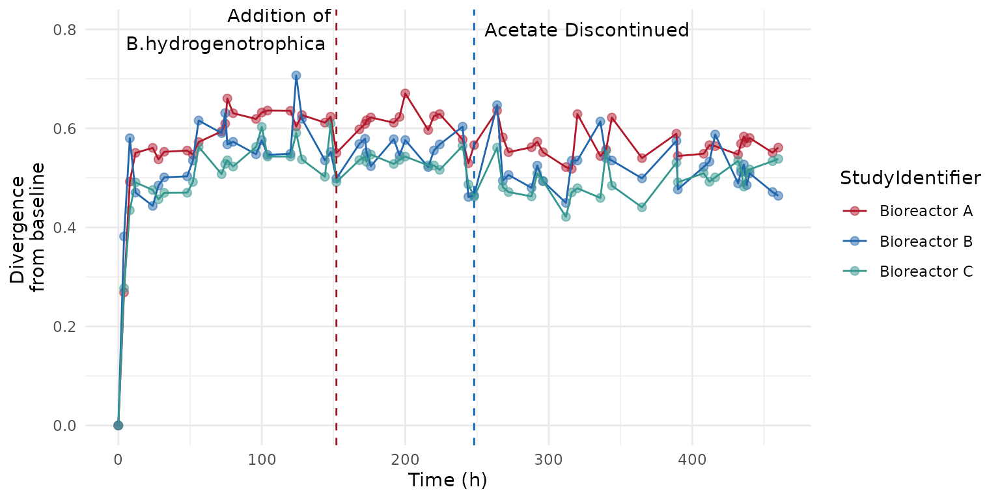

miaTime: Microbiome Time Series Analysis
Leo Lahti
leo.lahti@iki.fiYagmur Simsek
yagmur.simsek@hsrw.org2022-05-16
Source:vignettes/miaTime.Rmd
miaTime.RmdIntroduction
miaTime implements tools for microbiome time series
manipulation based on the TreeSummarizedExperiment (Huang 2021) data container. Much of the
functionality is also applicable to the
SummarizedExperiment (Morgan et al.
2020) data objects.
Installation
Installing the latest development version in R.
library(devtools)
devtools::install_github("microbiome/miaTime")Loading the package:
Storing time information with Period class
miaTime utilizes the functions available in the package
lubridate to convert time series field to “Period” class
object. This gives access to a number of readily available time
series manipulation tools.
Load example data:
##
## Attaching package: 'lubridate'## The following objects are masked from 'package:base':
##
## date, intersect, setdiff, union## Loading required package: MatrixGenerics## Loading required package: matrixStats##
## Attaching package: 'MatrixGenerics'## The following objects are masked from 'package:matrixStats':
##
## colAlls, colAnyNAs, colAnys, colAvgsPerRowSet, colCollapse,
## colCounts, colCummaxs, colCummins, colCumprods, colCumsums,
## colDiffs, colIQRDiffs, colIQRs, colLogSumExps, colMadDiffs,
## colMads, colMaxs, colMeans2, colMedians, colMins, colOrderStats,
## colProds, colQuantiles, colRanges, colRanks, colSdDiffs, colSds,
## colSums2, colTabulates, colVarDiffs, colVars, colWeightedMads,
## colWeightedMeans, colWeightedMedians, colWeightedSds,
## colWeightedVars, rowAlls, rowAnyNAs, rowAnys, rowAvgsPerColSet,
## rowCollapse, rowCounts, rowCummaxs, rowCummins, rowCumprods,
## rowCumsums, rowDiffs, rowIQRDiffs, rowIQRs, rowLogSumExps,
## rowMadDiffs, rowMads, rowMaxs, rowMeans2, rowMedians, rowMins,
## rowOrderStats, rowProds, rowQuantiles, rowRanges, rowRanks,
## rowSdDiffs, rowSds, rowSums2, rowTabulates, rowVarDiffs, rowVars,
## rowWeightedMads, rowWeightedMeans, rowWeightedMedians,
## rowWeightedSds, rowWeightedVars## Loading required package: GenomicRanges## Loading required package: stats4## Loading required package: BiocGenerics##
## Attaching package: 'BiocGenerics'## The following objects are masked from 'package:lubridate':
##
## intersect, setdiff, union## The following objects are masked from 'package:stats':
##
## IQR, mad, sd, var, xtabs## The following objects are masked from 'package:base':
##
## anyDuplicated, append, as.data.frame, basename, cbind, colnames,
## dirname, do.call, duplicated, eval, evalq, Filter, Find, get, grep,
## grepl, intersect, is.unsorted, lapply, Map, mapply, match, mget,
## order, paste, pmax, pmax.int, pmin, pmin.int, Position, rank,
## rbind, Reduce, rownames, sapply, setdiff, sort, table, tapply,
## union, unique, unsplit, which.max, which.min## Loading required package: S4Vectors##
## Attaching package: 'S4Vectors'## The following objects are masked from 'package:lubridate':
##
## second, second<-## The following objects are masked from 'package:base':
##
## expand.grid, I, unname## Loading required package: IRanges##
## Attaching package: 'IRanges'## The following object is masked from 'package:lubridate':
##
## %within%## Loading required package: GenomeInfoDb## Loading required package: Biobase## Welcome to Bioconductor
##
## Vignettes contain introductory material; view with
## 'browseVignettes()'. To cite Bioconductor, see
## 'citation("Biobase")', and for packages 'citation("pkgname")'.##
## Attaching package: 'Biobase'## The following object is masked from 'package:MatrixGenerics':
##
## rowMedians## The following objects are masked from 'package:matrixStats':
##
## anyMissing, rowMedians
# Load demo data
data(hitchip1006)
tse <- hitchip1006
# Time is given in days in the demo data.
# Convert days to seconds
time_in_seconds <- 60*60*24*colData(tse)[,"time"]
# Convert the time data to period class
Seconds <- as.period(time_in_seconds, unit="sec")
# Check the output
Seconds[1140:1151]## [1] "492480S" "198720S" "673920S" "198720S" "198720S" "708480S" "198720S"
## [8] "699840S" "198720S" "708480S" "181440S" "682560S"Conversion between time units
The time field in days is now shown in seconds. It can then be converted to many different units using the lubridate package.
Hours <- as.period(Seconds, unit = "hour")
Hours[1140:1151]## [1] "136H 48M 0S" "55H 11M 59.9999999999709S"
## [3] "187H 12M 0S" "55H 11M 59.9999999999709S"
## [5] "55H 11M 59.9999999999709S" "196H 47M 59.9999999998836S"
## [7] "55H 11M 59.9999999999709S" "194H 24M 0S"
## [9] "55H 11M 59.9999999999709S" "196H 47M 59.9999999998836S"
## [11] "50H 24M 0S" "189H 36M 0S"The updated time information can then be added to the
SummarizedExperiment data object as a new
colData (sample data) field.
## DataFrame with 1151 rows and 11 columns
## age sex nationality DNA_extraction_method project
## <integer> <factor> <factor> <factor> <factor>
## Sample-1 28 male US NA 1
## Sample-2 24 female US NA 1
## Sample-3 52 male US NA 1
## Sample-4 22 female US NA 1
## Sample-5 25 female US NA 1
## ... ... ... ... ... ...
## Sample-1168 50 female Scandinavia r 40
## Sample-1169 31 female Scandinavia r 40
## Sample-1170 31 female Scandinavia r 40
## Sample-1171 52 male Scandinavia r 40
## Sample-1172 52 male Scandinavia r 40
## diversity bmi_group subject time sample timeSec
## <numeric> <factor> <factor> <numeric> <character> <Period>
## Sample-1 5.76 severeobese 1 0 Sample-1 0S
## Sample-2 6.06 obese 2 0 Sample-2 0S
## Sample-3 5.50 lean 3 0 Sample-3 0S
## Sample-4 5.87 underweight 4 0 Sample-4 0S
## Sample-5 5.89 lean 5 0 Sample-5 0S
## ... ... ... ... ... ... ...
## Sample-1168 5.87 severeobese 244 8.1 Sample-1168 699840S
## Sample-1169 5.87 overweight 245 2.3 Sample-1169 198720S
## Sample-1170 5.92 overweight 245 8.2 Sample-1170 708480S
## Sample-1171 6.04 overweight 246 2.1 Sample-1171 181440S
## Sample-1172 5.74 overweight 246 7.9 Sample-1172 682560SCalculating time differences
The function helps to specify time points as durations.
Duration <- as.duration(Seconds)
Duration[1140:1151]## [1] "492480s (~5.7 days)" "198720s (~2.3 days)" "673920s (~1.11 weeks)"
## [4] "198720s (~2.3 days)" "198720s (~2.3 days)" "708480s (~1.17 weeks)"
## [7] "198720s (~2.3 days)" "699840s (~1.16 weeks)" "198720s (~2.3 days)"
## [10] "708480s (~1.17 weeks)" "181440s (~2.1 days)" "682560s (~1.13 weeks)"The difference between subsequent time points can then be calculated.
## [1] -216000 -293760 475200 -475200 0 509760 -509760 501120 -501120
## [10] 509760 -527040 501120The time difference from a selected point to the other time points can be calculated as follows.
base <- Hours - Hours[1] #distance from starting point
base[1140:1151]## [1] "136H 48M 0S" "55H 11M 59.9999999999709S"
## [3] "187H 12M 0S" "55H 11M 59.9999999999709S"
## [5] "55H 11M 59.9999999999709S" "196H 47M 59.9999999998836S"
## [7] "55H 11M 59.9999999999709S" "194H 24M 0S"
## [9] "55H 11M 59.9999999999709S" "196H 47M 59.9999999998836S"
## [11] "50H 24M 0S" "189H 36M 0S"
base_1140 <- Seconds - Seconds[1140]
base_1140[1140:1151]## [1] "0S" "-293760S" "181440S" "-293760S" "-293760S" "216000S"
## [7] "-293760S" "207360S" "-293760S" "216000S" "-311040S" "190080S"Time point rank
Rank of the time points can be calculated by rank
function provided in base R.
## DataFrame with 1151 rows and 12 columns
## age sex nationality DNA_extraction_method project
## <integer> <factor> <factor> <factor> <factor>
## Sample-1 28 male US NA 1
## Sample-2 24 female US NA 1
## Sample-3 52 male US NA 1
## Sample-4 22 female US NA 1
## Sample-5 25 female US NA 1
## ... ... ... ... ... ...
## Sample-1168 50 female Scandinavia r 40
## Sample-1169 31 female Scandinavia r 40
## Sample-1170 31 female Scandinavia r 40
## Sample-1171 52 male Scandinavia r 40
## Sample-1172 52 male Scandinavia r 40
## diversity bmi_group subject time sample timeSec
## <numeric> <factor> <factor> <numeric> <character> <Period>
## Sample-1 5.76 severeobese 1 0 Sample-1 0S
## Sample-2 6.06 obese 2 0 Sample-2 0S
## Sample-3 5.50 lean 3 0 Sample-3 0S
## Sample-4 5.87 underweight 4 0 Sample-4 0S
## Sample-5 5.89 lean 5 0 Sample-5 0S
## ... ... ... ... ... ... ...
## Sample-1168 5.87 severeobese 244 8.1 Sample-1168 699840S
## Sample-1169 5.87 overweight 245 2.3 Sample-1169 198720S
## Sample-1170 5.92 overweight 245 8.2 Sample-1170 708480S
## Sample-1171 6.04 overweight 246 2.1 Sample-1171 181440S
## Sample-1172 5.74 overweight 246 7.9 Sample-1172 682560S
## rank
## <numeric>
## Sample-1 503.5
## Sample-2 503.5
## Sample-3 503.5
## Sample-4 503.5
## Sample-5 503.5
## ... ...
## Sample-1168 1128.5
## Sample-1169 1077.0
## Sample-1170 1132.5
## Sample-1171 1067.0
## Sample-1172 1127.0Operations per unit
Sometimes we need to operate on time series per unit (subject, reaction chamber, sampling location, …).
Add time point rank per subject.
##
## Attaching package: 'dplyr'## The following object is masked from 'package:Biobase':
##
## combine## The following objects are masked from 'package:GenomicRanges':
##
## intersect, setdiff, union## The following object is masked from 'package:GenomeInfoDb':
##
## intersect## The following objects are masked from 'package:IRanges':
##
## collapse, desc, intersect, setdiff, slice, union## The following objects are masked from 'package:S4Vectors':
##
## first, intersect, rename, setdiff, setequal, union## The following objects are masked from 'package:BiocGenerics':
##
## combine, intersect, setdiff, union## The following object is masked from 'package:matrixStats':
##
## count## The following objects are masked from 'package:stats':
##
## filter, lag## The following objects are masked from 'package:base':
##
## intersect, setdiff, setequal, union
colData(tse) <- colData(tse) %>%
as.data.frame() %>%
group_by(subject) %>%
mutate(rank = rank(time, ties.method="average")) %>%
DataFrame()Calculate the difference in time from a given baseline time point.
# Define baseline function;
base <- function (x, baseline=min(x)) {x - baseline}
filter <- dplyr::filter
# Use time 1 as the baseline
colData(tse) <- colData(tse) %>%
as.data.frame() %>%
group_by(subject) %>%
mutate(shifted = base(time, baseline=1)) %>%
DataFrame()
# Check output
as.data.frame(colData(tse)[, c("subject", "time", "shifted")]) %>%
filter(subject == "831")## subject time shifted
## 1 831 0.0 -1.0
## 2 831 0.2 -0.8
## 3 831 0.7 -0.3
## 4 831 0.9 -0.1
## 5 831 1.4 0.4
# Use the minimum time point per subject as the baseline:
colData(tse) <- colData(tse) %>%
as.data.frame() %>%
group_by(subject) %>%
mutate(shifted = base(time)) %>%
DataFrame()
# Check output
as.data.frame(colData(tse)[, c("subject", "time", "shifted")]) %>%
filter(subject == "831")## subject time shifted
## 1 831 0.0 0.0
## 2 831 0.2 0.2
## 3 831 0.7 0.7
## 4 831 0.9 0.9
## 5 831 1.4 1.4Subset to baseline samples
#samples with time point 0
se <- hitchip1006
sample_time_zero <- colData(se)[which(colData(se)[, "time"] == 0),]
#sample with the smallest time point within each subject
colData(se) <- colData(se) %>%
as.data.frame() %>%
group_by(subject) %>%
mutate(rank = rank(time, ties.method="average")) %>%
DataFrame()
time_within_subject <- colData(se)[which(colData(se)$rank == 1),]
# Add some NAs in the time point data to demonstrate functionality with missing data
nainds <- sample(seq_len(ncol(se)), 50)
colData(se)$time[nainds] <- NA
colData(se) <- colData(se) %>%
as.data.frame() %>%
group_by(subject) %>%
mutate(rank = rank(time, ties.method="average")) %>%
DataFrame()
time_within_subject <- colData(se)[which(colData(se)$rank == 1),]
#There is still one sample from each subject even if the time information of the sample is missing
check_time <- data.frame(time_within_subject) %>% select(subject, time, rank)Estimating divergence and convergence
Calculate divergence from a baseline sample (or another reference
sample). This calculation can be carried out with the function . The
mia package can be installed with the following lines.
Calculate the difference in time from the baseline (first) time point, per subject.
## Loading required package: SingleCellExperiment## Loading required package: TreeSummarizedExperiment## Loading required package: Biostrings## Loading required package: XVector##
## Attaching package: 'Biostrings'## The following object is masked from 'package:base':
##
## strsplit## Loading required package: MultiAssayExperiment
tse <- hitchip1006
set.seed(41287)
# Just pick two example subjects that have 5 time points each
selected.samples <- sample(names(which(sort(table(colData(hitchip1006)$subject))==5)), 2)
tse <- tse[, colData(tse)$subject %in% selected.samples]
# Add relative abundances
tse <- transformSamples(tse, abund_values="counts", method="relabundance")
# Calculate divergence from baseline sample (time point 1)
tse <- getBaselineDivergence(tse,
group = "subject",
time_field = "time",
name_divergence = "divergence_from_baseline",
name_timedifference = "time_from_baseline",
abund_values="relabundance",
FUN = vegan::vegdist,
method="bray")
# Visualize time difference vs. community divergence (dissimilarity)
library(dplyr)
# Remove the baseline time points
df <- as.data.frame(colData(tse)) %>% dplyr::filter(time_from_baseline > 0)
library(ggplot2)
theme_set(theme_bw(20))
ggplot(data=df, aes(x=time_from_baseline, y=divergence_from_baseline, group=subject)) +
geom_point(aes(color=subject)) +
geom_smooth(formula = y ~ x, method="lm")
Similar example without miaTime. First without subject-wise grouping:
# Identify the baseline sample
tse <- hitchip1006
baseline_sample <- colnames(tse[, which.min(colData(tse)$time)])
# Pick the reference sample from count assay and calculate euclidean distance
# Name the new field as "divergence_from_baseline".
# This contains the divergence information.
library(mia)
baseline_profile <- assays(tse)$counts[, baseline_sample]
print(length(baseline_profile))## [1] 130## [1] 130 1151
tse <- estimateDivergence(tse, name = "divergence_from_baseline",
reference = baseline_profile,
FUN = stats::dist, method = "euclidean")
# Also add time from baseline
colData(tse)$time_from_baseline <- colData(tse)[, "time"] -
colData(tse)[baseline_sample, "time"]
# Visualize time difference vs. community divergence (dissimilarity)
library(dplyr)
df <- as.data.frame(colData(tse)) %>% dplyr::filter(time_from_baseline > 0)
library(ggplot2)
ggplot(data=df, aes(x=time_from_baseline, y=divergence_from_baseline)) +
geom_point() +
geom_smooth(formula = y ~ x, method="lm")
Divergence from baseline per subject:
# First define the function that calculates divergence for a given SE object
# in a desired way:
fun <- function (tse) {
baseline_sample <- rownames(colData(tse)[which.min(colData(tse)$time),])
estimateDivergence(tse, name = "divergence_from_baseline",
reference = assays(tse)$counts[, baseline_sample],
FUN = stats::dist, method = "euclidean")
}
# List samples per subject
spl <- split(colnames(tse), tse$subject)
# Apply the operation per subject (here just the first 3 to speed up example)
tse_list <- lapply(spl[1:3], function (s) {fun(tse[,s])})
# Combine the TSE elements in the list
tse2 <- do.call(cbind, tse_list)Calculate convergence i.e. divergence from the last sample:
# Identify the last sample
tse <- hitchip1006
endpoint_sample <- colnames(tse[, which.max(colData(tse)$time)])
# Pick the reference sample from count assay and calculate euclidean distance
# Name the new field as "convergence".
# This contains the divergence information.
library(mia)
tse <- estimateDivergence(tse, name = "convergence",
reference = assays(tse)$counts[, endpoint_sample],
FUN = stats::dist, method = "euclidean")
# Also add time from endpoint
colData(tse)$time_from_endpoint <- colData(tse)[, "time"] -
colData(tse)[endpoint_sample, "time"]Sample dissimilarity between consecutive time steps(step size n >=
1) within a group(subject, age, reaction chamber, etc.) can be
calculated by getStepwiseDivergence.
library(miaTime)
data("hitchip1006")
tse <- hitchip1006
tse <- tse[, colData(tse)$subject %in% c("900", "934", "843", "875")]
tse2 <- getStepwiseDivergence(tse, group = "subject",
time_interval = 1,
time_field = "time")
#for multiple time steps in a different grouping
tse3 <- getStepwiseDivergence(tse, group = "age",
time_interval = 2,
time_field = "time")Example Minimal gut microbiome
Dense samples of the minimal gut microbiome. In the initial hours,
MDb-MM was grown under batch condition and 24 h onwards, continuous
feeding of media with pulse feeding cycles. This information is stored
in the colData.
library(miaTime)
data("minimalgut")
tse <- minimalgut
# quick check of number of samples
table(colData(tse)$StudyIdentifier,colData(tse)$condition_1)##
## batch_carbs DoS pulse Overnight
## Bioreactor A 4 38 19
## Bioreactor B 4 38 19
## Bioreactor C 4 38 19Visualize samples available for each of the bioreactors. This allows to identify if there are any missing samples for specific times.
library(ggplot2)
# Visualize sampling times available in the experiment
colData(tse) |>
as.data.frame() |>
ggplot(aes(as.factor(Time.hr), StudyIdentifier)) +
geom_tile(aes(fill=condition_1), color="white") +
scale_fill_manual("Condition Sampled",
values = c("#ff006e", "#e07a5f", "#457b9d")) +
theme_minimal() +
theme(axis.text.x = element_text(size=8, angle = 90),
legend.position = "top") +
labs(x="Time (h)", y="")
Community dynamics
The minimalgut dataset, mucus-diet based minimal
microbiome (MDbMM-16), consists of 16 species assembled in three
bioreactors. We can investigate the succession of mdbMM16 from the start
of experiment here hour zero until the end of the experiment.
## Divergence from baseline i.e from hour zero.
tse <- mia::relAbundanceCounts(minimalgut) # get relative abundance
tse <- getBaselineDivergence(tse,
group = "StudyIdentifier",
time_field = "Time.hr",
name_divergence = "divergence_from_baseline",
name_timedifference = "time_from_baseline",
abund_values="relabundance",
FUN = vegan::vegdist,
method="bray")Visualize the divergence
# First define nice colors for bioreactors
bioreac_cols <- c(`Bioreactor A`= "#b2182b",
`Bioreactor B`="#2166ac",
`Bioreactor C` = "#35978f")
colData(tse) |>
as.data.frame() |>
ggplot(aes(x=Time.hr, y=divergence_from_baseline))+
geom_point(aes(color=StudyIdentifier), size=2, alpha=0.5) +
geom_line(aes(color=StudyIdentifier)) +
theme_minimal() +
scale_color_manual(values = bioreac_cols) +
labs(x="Time (h)", y="Divergence \nfrom baseline") +
# highlight specific timepoints
geom_vline(xintercept = 152, lty=2, color="#991720") +
geom_vline(xintercept = 248, lty=2, color= "#0963bd")+
annotate("text",x=c(152, 248),y=c(0.8, 0.8),
label=c("Addition of\nB.hydrogenotrophica","Acetate Discontinued"),
hjust=c(1.05,-0.05))
Now visualize abundance of Blautia hydrogenotrophica using
the miaViz::plotSeries function.
library(miaViz)## Loading required package: ggraph
plotSeries(mia::relAbundanceCounts(minimalgut),
x = "Time.hr",
y = "Blautia_hydrogenotrophica",
colour_by = "Species",
abund_values = "relabundance")+
geom_vline(xintercept = 152, lty=2, color="#991720") +
geom_vline(xintercept = 248, lty=2, color= "#0963bd")+
annotate("text",x=c(152, 248),y=c(0.2, 0.15),
label=c("Addition of\nB.hydrogenotrophica","Acetate Discontinued"),
hjust=c(1.05,-0.05))+
labs(x="Time (h)", y="B.hydrogenotrophica\nRelative Abundance") +
theme(legend.position = "none")
Session info
## R version 4.2.0 (2022-04-22)
## Platform: x86_64-pc-linux-gnu (64-bit)
## Running under: Ubuntu 20.04.4 LTS
##
## Matrix products: default
## BLAS: /usr/lib/x86_64-linux-gnu/openblas-pthread/libblas.so.3
## LAPACK: /usr/lib/x86_64-linux-gnu/openblas-pthread/liblapack.so.3
##
## locale:
## [1] LC_CTYPE=en_US.UTF-8 LC_NUMERIC=C
## [3] LC_TIME=en_US.UTF-8 LC_COLLATE=en_US.UTF-8
## [5] LC_MONETARY=en_US.UTF-8 LC_MESSAGES=en_US.UTF-8
## [7] LC_PAPER=en_US.UTF-8 LC_NAME=C
## [9] LC_ADDRESS=C LC_TELEPHONE=C
## [11] LC_MEASUREMENT=en_US.UTF-8 LC_IDENTIFICATION=C
##
## attached base packages:
## [1] stats4 stats graphics grDevices utils datasets methods
## [8] base
##
## other attached packages:
## [1] miaViz_1.5.0 ggraph_2.0.5
## [3] ggplot2_3.3.6 mia_1.5.0
## [5] MultiAssayExperiment_1.23.0 TreeSummarizedExperiment_2.1.4
## [7] Biostrings_2.65.0 XVector_0.37.0
## [9] SingleCellExperiment_1.19.0 dplyr_1.0.9
## [11] SummarizedExperiment_1.27.1 Biobase_2.57.0
## [13] GenomicRanges_1.49.0 GenomeInfoDb_1.33.3
## [15] IRanges_2.31.0 S4Vectors_0.35.0
## [17] BiocGenerics_0.43.0 MatrixGenerics_1.9.0
## [19] matrixStats_0.62.0 lubridate_1.8.0
## [21] miaTime_0.1.6 BiocStyle_2.25.0
##
## loaded via a namespace (and not attached):
## [1] utf8_1.2.2 tidyselect_1.1.2
## [3] RSQLite_2.2.14 AnnotationDbi_1.59.0
## [5] grid_4.2.0 TSP_1.2-0
## [7] BiocParallel_1.31.3 Rtsne_0.16
## [9] munsell_0.5.0 ScaledMatrix_1.5.0
## [11] codetools_0.2-18 ragg_1.2.2
## [13] withr_2.5.0 colorspace_2.0-3
## [15] highr_0.9 knitr_1.39
## [17] labeling_0.4.2 GenomeInfoDbData_1.2.8
## [19] polyclip_1.10-0 bit64_4.0.5
## [21] farver_2.1.0 rprojroot_2.0.3
## [23] vctrs_0.4.1 treeio_1.21.0
## [25] generics_0.1.2 xfun_0.31
## [27] R6_2.5.1 doParallel_1.0.17
## [29] graphlayouts_0.8.0 ggbeeswarm_0.6.0
## [31] clue_0.3-60 rsvd_1.0.5
## [33] seriation_1.3.5 locfit_1.5-9.5
## [35] gridGraphics_0.5-1 bitops_1.0-7
## [37] cachem_1.0.6 DelayedArray_0.23.0
## [39] scales_1.2.0 SEtools_1.11.0
## [41] beeswarm_0.4.0 gtable_0.3.0
## [43] beachmat_2.13.0 sva_3.45.0
## [45] tidygraph_1.2.1 rlang_1.0.2
## [47] genefilter_1.79.0 systemfonts_1.0.4
## [49] GlobalOptions_0.1.2 splines_4.2.0
## [51] lazyeval_0.2.2 BiocManager_1.30.17
## [53] yaml_2.3.5 reshape2_1.4.4
## [55] tools_4.2.0 bookdown_0.26
## [57] ggplotify_0.1.0 ellipsis_0.3.2
## [59] decontam_1.17.0 jquerylib_0.1.4
## [61] RColorBrewer_1.1-3 Rcpp_1.0.8.3
## [63] plyr_1.8.7 sparseMatrixStats_1.9.0
## [65] zlibbioc_1.43.0 purrr_0.3.4
## [67] RCurl_1.98-1.6 GetoptLong_1.0.5
## [69] viridis_0.6.2 ggrepel_0.9.1
## [71] cluster_2.1.3 fs_1.5.2
## [73] DECIPHER_2.25.0 magrittr_2.0.3
## [75] data.table_1.14.2 openxlsx_4.2.5
## [77] circlize_0.4.15 ggnewscale_0.4.7
## [79] randomcoloR_1.1.0.1 patchwork_1.1.1
## [81] evaluate_0.15 xtable_1.8-4
## [83] XML_3.99-0.9 gridExtra_2.3
## [85] shape_1.4.6 compiler_4.2.0
## [87] scater_1.25.1 tibble_3.1.7
## [89] V8_4.1.0 crayon_1.5.1
## [91] htmltools_0.5.2 ggfun_0.0.6
## [93] mgcv_1.8-40 aplot_0.1.4
## [95] tidyr_1.2.0 geneplotter_1.75.0
## [97] DBI_1.1.2 tweenr_1.0.2
## [99] ComplexHeatmap_2.13.0 MASS_7.3-57
## [101] Matrix_1.4-1 permute_0.9-7
## [103] cli_3.3.0 parallel_4.2.0
## [105] igraph_1.3.1 pkgconfig_2.0.3
## [107] pkgdown_2.0.3 registry_0.5-1
## [109] scuttle_1.7.2 foreach_1.5.2
## [111] ggtree_3.5.0 annotate_1.75.0
## [113] vipor_0.4.5 bslib_0.3.1
## [115] DirichletMultinomial_1.39.0 yulab.utils_0.0.4
## [117] stringr_1.4.0 digest_0.6.29
## [119] vegan_2.6-3 rmarkdown_2.14
## [121] tidytree_0.3.9 edgeR_3.39.1
## [123] DelayedMatrixStats_1.19.0 curl_4.3.2
## [125] rjson_0.2.21 lifecycle_1.0.1
## [127] nlme_3.1-157 jsonlite_1.8.0
## [129] BiocNeighbors_1.15.0 desc_1.4.1
## [131] viridisLite_0.4.0 limma_3.53.0
## [133] fansi_1.0.3 pillar_1.7.0
## [135] lattice_0.20-45 KEGGREST_1.37.0
## [137] fastmap_1.1.0 httr_1.4.3
## [139] survival_3.3-1 glue_1.6.2
## [141] zip_2.2.0 sechm_1.5.1
## [143] png_0.1-7 iterators_1.0.14
## [145] bit_4.0.4 ggforce_0.3.3
## [147] stringi_1.7.6 sass_0.4.1
## [149] blob_1.2.3 textshaping_0.3.6
## [151] DESeq2_1.37.0 BiocSingular_1.13.0
## [153] memoise_2.0.1 irlba_2.3.5
## [155] ape_5.6-2